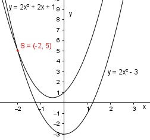

Aufgabe 70 An welchen Stellen x schneiden sich die beiden Parabeln y = 2x2 - 3 und y = 2x2 + 2x + 1? Für die Schnittpunkte gilt : 2x2 - 3 = 2x2 + 2x + 1 |-2x2 -3 = 2x + 1 |-1 -4 = 2x |:2 x = -2 y = 2 * (-2)2 - 3 = 8 – 3 = 5 Schnittpunkt (-2|5) 